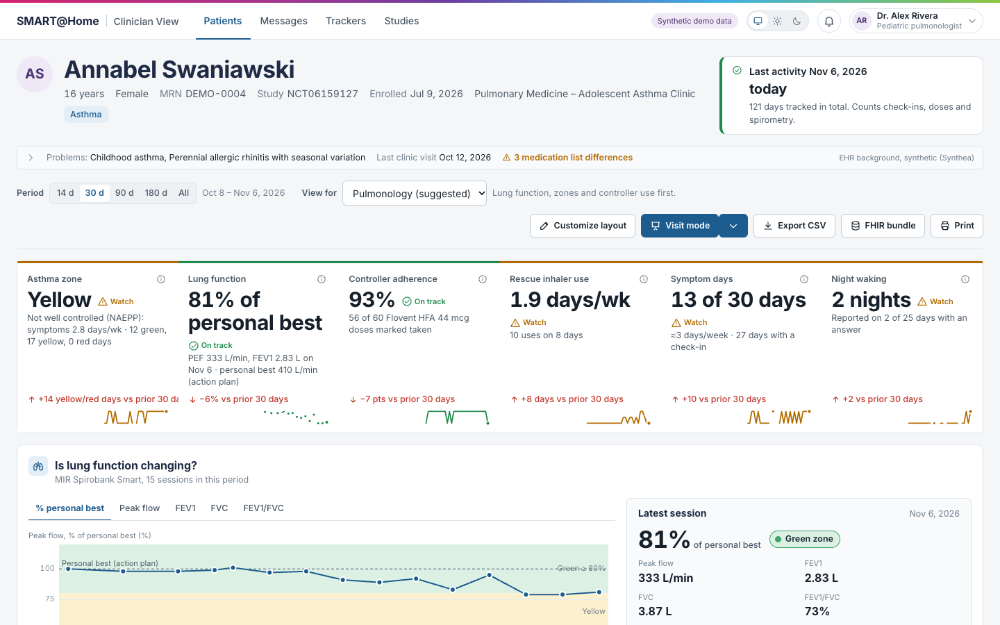
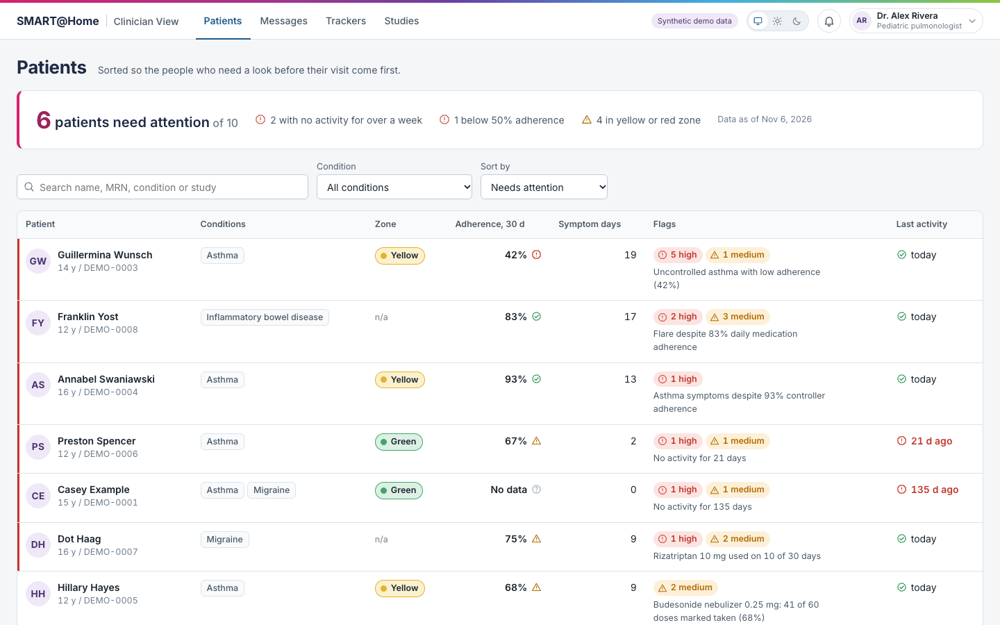
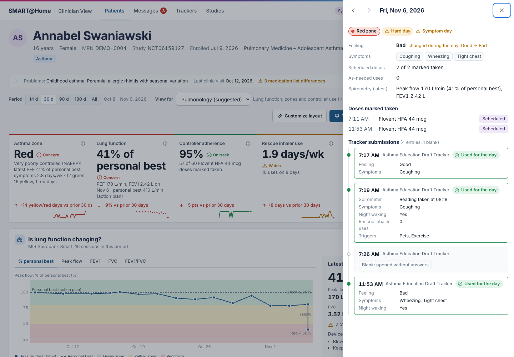
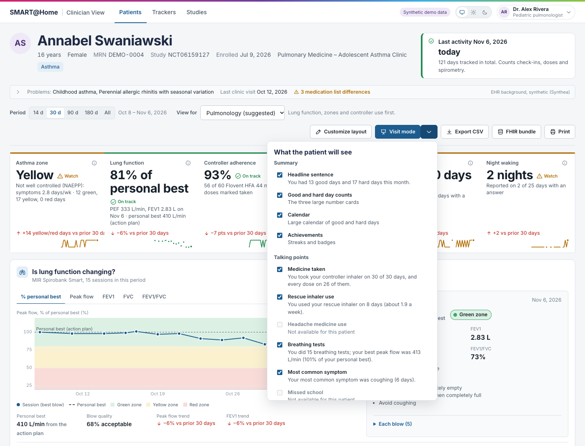
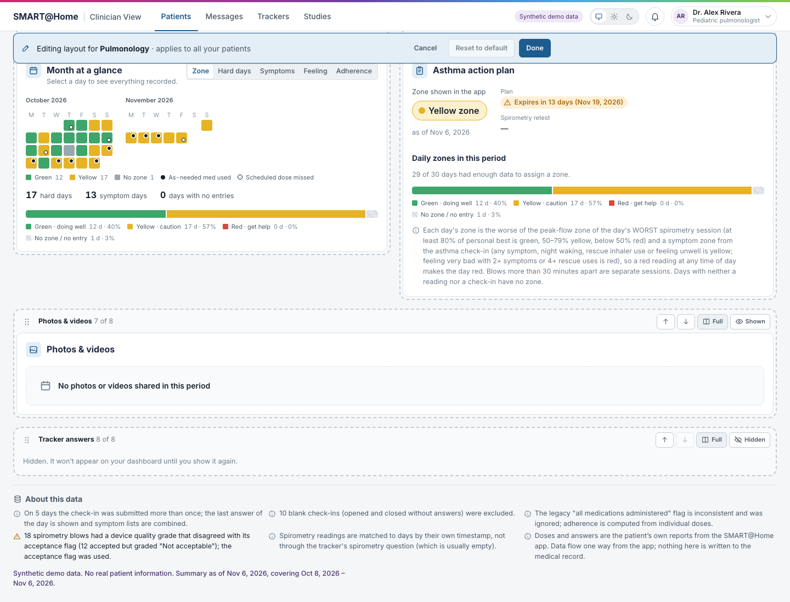
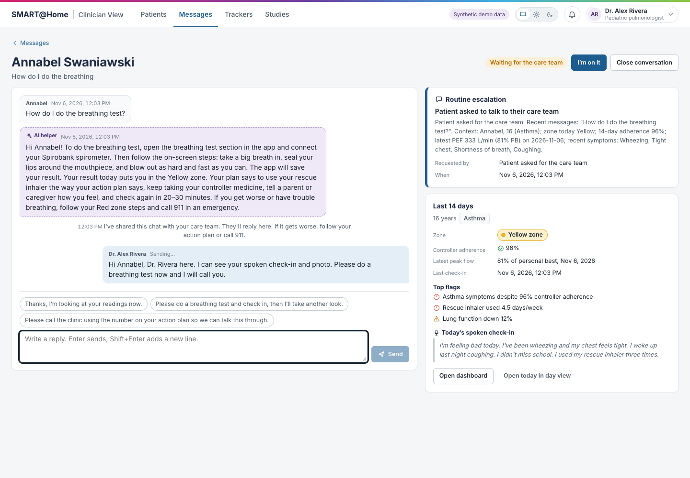
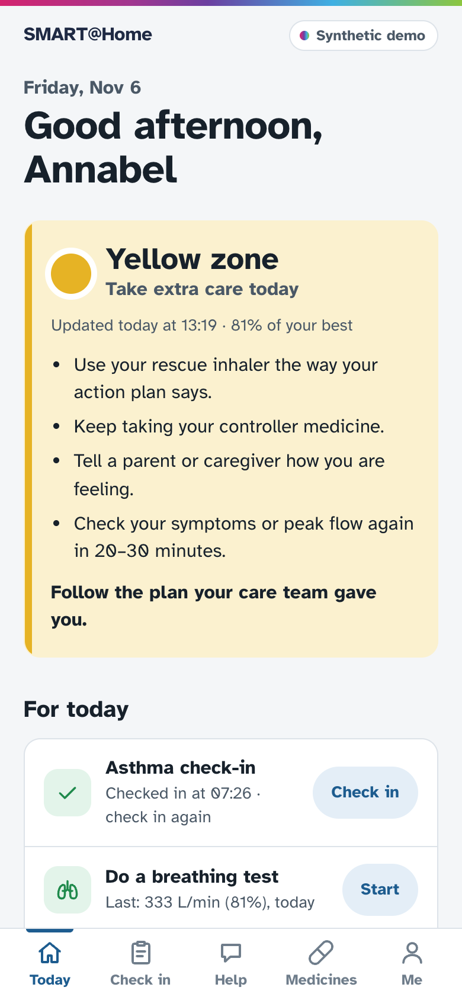
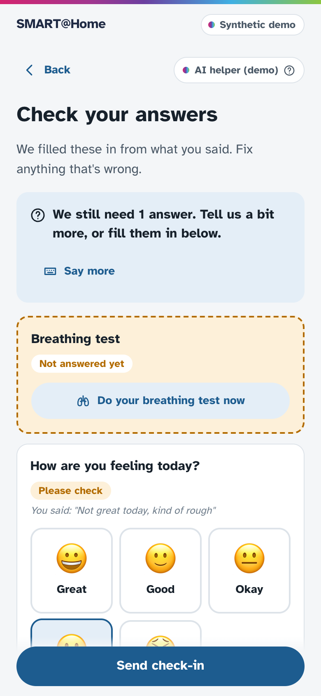
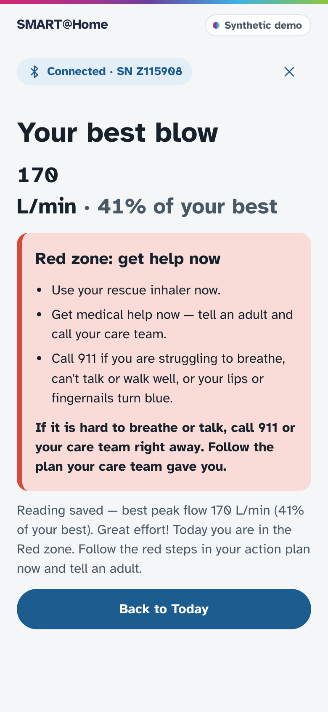
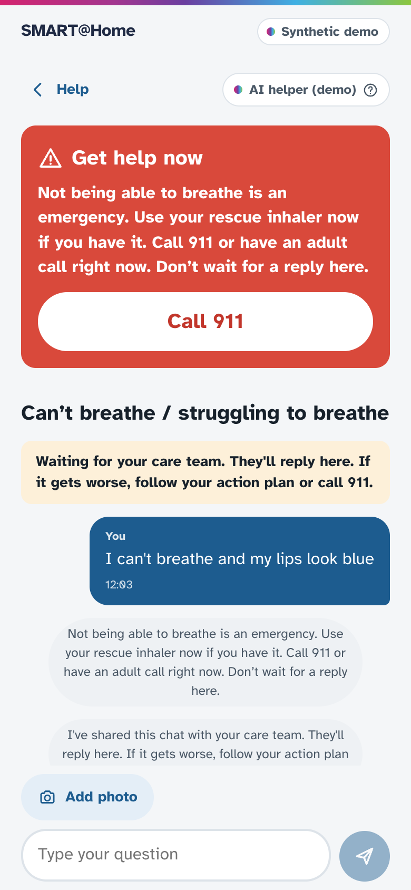

Teens already log their asthma, migraine and IBD at home in SMART@Home. We turned that raw log into a two-minute pre-visit answer: is the treatment not working, or just not being taken? We also made it easier for patients to send the data in the first place.

The problem
Clinicians see 5–30 patients a day and look at home data in the minute before a visit. Today the portal shows one row per submission, which leaves clinicians asking:
Answering means reading every row and counting by hand: no trends, no flags, no date filters.
Answers change within minutes, repeat entries aren't combined, and the spirometry column is empty even though readings exist.
Doses link to medicines by random IDs, and the "last logged" date is wrong. Clinicians can't tell a failing treatment from an untaken one.
The answer
The patient list is sorted by who needs attention, using NAEPP asthma-control thresholds. It also separates the two situations that need different decisions:
Rescue inhaler 4 days a week and peak flow falling. Fix adherence before escalating.
Symptoms 3 days a week and lung function down 6%. Consider checking technique or stepping up.

Clinician view
Headline metrics with trends and plain-language "how is this calculated", then a calendar, a timeline that lines up symptoms, doses, rescue use and peak flow on one axis, adherence strips, spirometry in clinical units, and a chart for every tracker question. It works for any condition and offers views for pulmonology, primary care, nursing, neurology and GI.




Patient app
When a teen feels awful, tapping through seven questions is the last thing they'll do. So they can just talk, add a photo, or ask for help.




Closing the loop
Under the hood
What's next
Sessions with the asthma study team to tune thresholds, wording and the default views.
Launch as the existing SMART@Home tab via SMART on FHIR; the data is already FHIR R4.
A HIPAA-eligible deployment under a BAA, clinical review of the helper, and patient consent for voice.
Demo only. Every patient is synthetic (demographics and EHR history generated with Synthea, plus scripted home data). The AI features are not medical advice. Hackathon materials from Cincinnati Children's are not redistributed here.